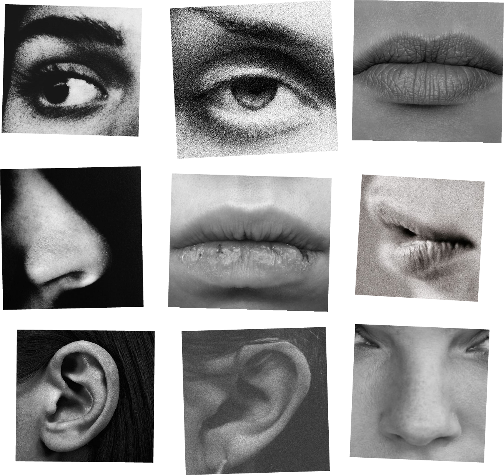

Wie Instagram of TikTok opent, ziet niet alles wat mensen hebben geplaatst, maar een selectie die een algoritme voor hem of haar heeft gemaakt. Dat is een reeks regels die bepaalt welke posts als eerste verschijnen en daarvoor kijkt naar wat je liket, waarop je reageert en wat je deelt. (Kontentino, z.d.-a) Omdat het doel van een platform niet altijd is om je de beste content te laten zien maar om je betrokken te houden, werkt zo’n systeem vooral met aandacht. Posts die snel veel likes, reacties en shares krijgen, komen hoger in je feed te staan, terwijl posts die minder presteren ondersneeuwen. (Kontentino, z.d.-b) Bij TikTok kijkt het algoritme volgens het platform zelf naar hoe jij reageert op video’s, je eigen creaties en het soort telefoon dat je gebruikt. (Android Planet, z.d.) Het gevolg is een kringloop: aanbevelingsalgoritmes weerspiegelen niet alleen je interesses, ze sturen ze ook, doordat ze versterken wat je al bekijkt en het moeilijker maken om andere perspectieven tegen te komen. (Algolit, z.d.) Omdat de interessante video’s en berichten bovendien nooit ophouden, blijven we eindeloos doorscrollen. (Android Planet, 2025)
Doordat opvallende posts hoger komen te staan, zie je vooral de mooiste foto’s en de leukste momenten van anderen. Dat is niet het hele leven van die mensen, maar het beste stukje ervan, en jongeren hebben vaak moeite om dat verschil te zien. Uit onderzoek van Kantar Public bleek dat driekwart van de jongeren niet herkent wanneer een bericht op Instagram is gesponsord of een foto duidelijk is gemanipuleerd. (Radar, 2018) Dat onderzoek is al ouder, maar het laat zien hoe makkelijk een bewerkt beeld voor echt wordt aangezien. En omdat wat jongeren online plaatsen en bekijken belangrijk is voor hoe ze zich voelen over zichzelf en hun leven (Vrije Universiteit Amsterdam, 2023), blijft zo’n beeld niet zonder gevolgen.
Wie dagelijks perfecte beelden ziet, gaat zichzelf daarmee vergelijken, en dat vergelijken kan het zelfbeeld aantasten. Het Trimbos-instituut noemt stress en sociale vergelijking als risico, vooral bij jongeren met een lager zelfbeeld. (Trimbos-instituut, 2025a) Een rapport van de Universiteit van Amsterdam komt tot de conclusie dat social media goed zijn voor vriendschappen, maar minder goed voor het zelfbeeld. (Universiteit van Amsterdam, 2023) Ook voelt ruim een kwart van de jongeren druk om altijd bereikbaar te zijn. (Universiteit van Amsterdam, 2023) Dat verband lijkt te kloppen, want in een experiment leidde minder socialemediagebruik tot minder blootstelling aan onbereikbare schoonheidsnormen en daardoor tot een gezonder lichaamsbeeld. (Scientias, z.d.)
Dat is extra belangrijk omdat je als jongere nog aan het ontdekken bent wie je bent, wat je mooi vindt en waar je bij hoort. Als je in die fase jezelf meet aan een standaard die bijna niemand kan halen, kun je gaan denken dat je pas goed genoeg bent als je er net zo uitziet. Daardoor durf je misschien minder te laten zien wie je echt bent, en dat belemmert juist de ontwikkeling van een eigen identiteit.
Toch is het eerlijk om te zeggen dat dit niet voor iedereen even sterk geldt. Hoogleraar Patti Valkenburg schrijft dat vrijwel alle studies een kleine invloed van sociale media op het welzijn van jongeren vinden. (Valkenburg, z.d.) Het Trimbos-instituut benadrukt dat de relatie tussen sociale media en welzijn sterk verschilt per jongere. (Trimbos-instituut, 2025a) Onderzoeker Nastasia Griffioen vond dat er over het algemeen geen verband was tussen sociale media en hoe jongeren zich op de korte termijn voelden, en dat het sterk afhangt van de persoon en de context. (Radboud Universiteit, z.d.) Het Nederlands Jeugdinstituut wijst er bovendien op dat de sociale omgeving een grotere invloed heeft op het geluksgevoel van jongeren dan sociale media. (Nederlands Jeugdinstituut, z.d.) De schade treft dus vooral jongeren die al kwetsbaar zijn: volgens de onderzoeker uit het experiment gaat het om jongeren met angst of depressie, een slecht lichaamsbeeld of ervaring met (cyber)pesten. (Scientias, z.d.)
Dat betekent niet dat jongeren moeten stoppen met sociale media, maar wel dat ze moeten weten hoe het werkt. Wie begrijpt dat een feed een selectie is die draait om aandacht, ziet ook dat het perfecte plaatje een uitkomst van het systeem is en niet de norm waar je aan moet voldoen. Je kunt daar zelf iets aan doen, want op Instagram kun je kiezen om alleen berichten te zien van mensen die je volgt. (Android Planet, 2025) Daarnaast vindt het Trimbos-instituut dat digitale media kansen én risico’s meebrengen en dat jongeren recht hebben op begeleiding. (Trimbos-instituut, 2025b) Als de druk om perfect te zijn kleiner wordt, is er weer ruimte om gewoon jezelf te zijn. Dat is leven zonder filter.
